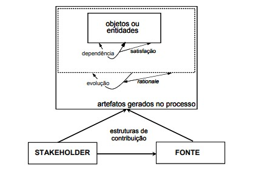

Pós-rastreabilidade
1. Introdução
Rastreabilidade é um ponto importante quando falamos de elicitação de requisitos e todos os documentos e artefatos produzidos no processo considerando que estes requisitos podem mudar com o tempo, as mudanças culturais e as regras de negócios podem se alterar facilmente por isso deve-se fazer uma ligação entre os artefatos, de qual artefato eles surgiram e quais eles ajudaram a produzir. Dado o contexto, é possível fazer a rastreabilidade forward-to, forward-from, backward-from e backward-to.
- forward-to: liga documentos produzidos na elicitação do plano de negócio aos requisitos relevantes que surgiram.
- forward-from: liga os requisitos aos artefatos de desenho e implementação.
- backward-from: liga os requisitos as suas fontes nos documentos produzidos na elicitação.
- backward-to: liga os artefatos de desenho e implementação aos requisitos elencados.
Por exemplo, na página de especificação suplementar é possível ver nas tabelas quais requisitos deram origem aquela especificação, assim como na página de histórias de usuários. A rastreabilidade ainda ajuda o desenvolvimento em pontos como:
- Identificar requisitos que ainda não foram elencados;
- Resolução de requisitos em conflito;
- Estimativa de variação no cronograma do projeto;
- Verificar requisitos que não possuem casos de teste;
- Correção de defeitos;
- Validação;
- Reutilização de componentes;
- Melhorias no hardware(componentes físicos de uma máquina).
2. Metodologia
Para aplicar a rastreabilidade existem modelos e ferramentas que auxiliam o processo, como o metamodelo proposto por Ramesh&Jarke, o qual foca mais na simplicidade do modelo e na evolução, registrando as alterações e motivações para tal, e o metamodelo proposto por Toranzo, o qual foca mais nos aspectos gerenciais do projeto. Algumas ferramentas como softwares de ligação entre cenários e léxicos, entre requisitos e seus casos de teste existem e são oferecidos pela internet, mas para o nosso projeto optamos por algo mais simples que pudesse satisfazer facilmente nossas necessidades, como a matriz de rastreamento.
Os passos seguidos para fazer a rastreabilidade foram:
- Definir os tipos de elos: optamos por usar o metamodelo proposto por Ramesh&Jarke;
- Identificar as ferramentas que apoiarão: matriz de rastreamento feita em markdown (linguagem de apoio o qual esse site foi programado);
- Estabelecer as entidades (artefatos, componentes, requisitos, objetos) a serem rastreados: Rich-Picture, Perfil de usuário, Personas, Requisitos Finais, Léxicos, Cenários, Casos de Uso, Especificação Suplementar, NFR, Histórias de Usuário e Protótipo.
- Validar os elos com a equipe: revisão feita por um membro da equipe.
obs.: Foi considerado fazer o rastreamento do Backlog nesta página, porém este artefato já traz a história de usuário e o requisito a qual ele pertence.
No metamodelo proposto por Ramesh&Jarke as dimensões consideradas são: fontes, documentos que remetem a origem dos requisitos; interessados (stakeholders), pessoas envolvidas no processo de requisitos e possuem um grau de interesse na rastreabilidade e objetos ou artefatos, objetos conceituais relacionados aos produtos ou artefatos gerados no desenvolvimento. E as variedades dos elos são divididas entre dois grupos: relacionados ao produto e relacionados ao processo que pode ser observado na tabela 1 e na figura 1.
| Grupo | Elos | Descrição |
|---|---|---|
| Relacionado ao produto | satisfação | Assegurar que o requisito seja atendido pelo sistema |
| Relacionado ao produto | dependência | Artefatos existentes que levam a novos artefatos ou artefatos modificados |
| Relacionado ao processo | evolução | Representar a motivação dos artefatos que existem ou as razões para evolução |
| Relacionado ao processo | rationale (justificativa) | Apoiar o gerenciamento de dependência entre os artefatos |

Levando em consideração o metamodelo, os artefatos e a ferramenta escolhida, na tabela 2, 3, 4 e 5 pode ser observado o modelo de matriz a ser construída assim como exemplo para os seus campos.
| Artefato | Fontes | Interessados | Elo |
|---|---|---|---|
| Rich Picture | Introspecção | Alexia e Lucas | Evolução |
| Id | Requisito | Artefatos | Implementação | Elo |
|---|---|---|---|---|
| RF01 | Deve ser possível ver mapa | UC01, Visualizar, Ver mapa, ES03, US-01 | Completa/Parcial/Não há | Dependência |
| Id | Requisito | Fonte |
|---|---|---|
| RF01 | Deve ser possível ver mapa | Observação |
| Tópico | softgoal | Especificação Suplementar | Elo |
|---|---|---|---|
| Usabilidade | Interface Intuitiva | ES04 | Satisfação |
É importante mencionar que optamos por não separar em backward-from e forward-from como outros grupos fizeram com base nos nossos estudos e diferentes metamodelos utilizados, porém nos inspiramos em alguns detalhes como no status de implementação e em quais tabelas deveriam ser implementadas.
3. Matriz
Abaixo está a construção das tabelas completas com base nas tabelas modelos 2, 3, 4 e 5.
3.1. Rastreabilidade de artefatos
Para fazer o rastreamento dos artefatos, construímos a tabela 6 com os artefatos a técnica ou artefato que deu origem a ele (fonte) quem mais participou da sua construção e o elo deles em relação a fonte.
| Artefato | Fontes | Interessados | Elo |
|---|---|---|---|
| Rich Picture | Introspecção | Luíza e Alexia | Evolução |
| Perfil de Usuário | Questionários e Entrevista | Lucas, Luciano, Personas | Evolução |
| Persona | Role Playing | Lucas e Luciano | Evolução |
| Requisitos Finais | Entrevista informal, Observação, Questionário, MoSCoW, Custo X Benefício, Matriz Básico | Alexia, Iago, Luíza, Marcus, Entrevistados, Usuários Finais e Personas | Satisfação |
| Léxicos | Léxicos | Marcus, Lucas e Usuários Finais | Satisfação |
| Cenários | Cenários | Lucas | Satisfação |
| Diagrama de Casos de Uso | UML | Luiza e Luciano | Dependência |
| Especificação Suplementar | FURPS+ | Alexia e Iago | Rationale |
| NFR | NFR Framework | Alexia | Rationale |
| Histórias de Usuário | User Stories | Iago, Marcus e Usuários Finais | Satisfação |
| Protótipo de Baixa Fidelidade | Introspecção | Marcus | Satisfação |
3.2. Rastreabilidade forward-from de requisitos
Para realizar a tabela forward-from foram rastreados os requisitos da página dos Requisitos Finais ligando eles com os artefatos que foram construídos com base neles: diagramas de uso, léxicos, cenários, especificação suplementar e histórias de usuário. Como também, se o requisito foi ou não implementado e o elo que ele tem com os artefatos baseado no metamodelo de Ramesh&Jarke como pode ser visto na tabela 7.
| Id | Requisito | Artefatos | Implementação | Elo |
|---|---|---|---|---|
| RF01 | Deve ser possível ver mapa | UC01, Visualizar, Ver mapa, ES03, ES11, ES24, US-01 | Completa | Satisfação |
| RF02 | Deve ser possível dar Zoom In | UC01, Visualizar, Zoom In, ES03, ES12, US-02 | Completa | Dependência |
| RF03 | Deve ser possível dar Zoom Out | UC01, Visualizar, Zoom Out, ES03, US-02 | Completa | Dependência |
| RF04 | Deve ser possível ver nome de ruas no mapa | UC01, Visualizar, Ver nome das ruas, US-03 | Completa | Dependência |
| RF05 | Deve ser possível ver localizações no mapa | UC01, Visualizar, Ver localização, ES03, US-04 | Completa | Dependência |
| RF06 | Deve ser possível selecionar localizações do mapa | UC01, Visualizar, Selecionar Localização, ES03, ES23, US-05 | Completa | Dependência |
| RF07 | Deve ser possível ver distância da localização selecionada até o usuário | UC01, Traçar, Selecionar Localização, US-10 | Completa | Dependência |
| RF08 | Deve ser possível ver pontos de ônibus no mapa | UC01, Visualizar, Ver pontos de ônibus, US-27 | Completa | Dependência |
| RF09 | Deve ser possível ver saídas e entradas de metrô | UC01, Visualizar, Ver acessos de metrô, US-28 | Completa | Dependência |
| RF10 | Deve ser possível pesquisar por localizações | UC02, Pesquisar, Pesquisar localizações, ES07, ES23, US-08 | Completa | Dependência |
| RF11 | Deve ser possível ver localização destacada no mapa do local pesquisado | UC02, Visualizar, Pesquisar, Ver localização destacada, ES07, US-09 | Completa | Dependência |
| RF12 | Deve ser possível ligar para a localização pesquisada caso disponível | UC02, Contato, Ligar, US-29 | Completa | Dependência |
| RF13 | Deve ser possível selecionar filtros de pesquisa | UC02, Filtrar, US-11 | Completa | Dependência |
| RF14 | Deve ser possível ver lista de localizações filtradas | UC02, Filtrar, Ver localização, US-12 | Completa | Dependência |
| RF15 | Deve ser possível, caso seja restaurante, filtrar por opção de comida | Filtrar, US-13, US-37 | Completa | Dependência |
| RF16 | Deve ser possível, caso seja restaurante, ver cifrões para demonstrar a faixa de preço do restaurante | Visualizar avaliações, US-38 | Completa | Dependência |
| RF17 | Deve ser possível ver horário de funcionamento da localização quando disponível | Visualizar avaliações, Selecionar Localização, US-06 | Completa | Dependência |
| RF18 | Deve ser possível ver status de funcionamento da localização quando disponível | Visualizar avaliações, Selecionar Localização, US-07 | Completa | Dependência |
| RF19 | Deve ser possível ver comentários de localizações | Visualizar avaliações, Selecionar Localização, US-30 | Completa | Dependência |
| RF20 | Deve ser possível filtrar os comentários de localizações | Filtrar, US-31 | Completa | Dependência |
| RF21 | Deve ser possível fazer comentários sobre localizações | Avaliar, US-35 | Completa | Dependência |
| RF22 | Deve ser possível ver nota de localizações | Visualizar avaliações, Selecionar Localização, US-32 | Completa | Dependência |
| RF23 | Deve ser possível dar uma nota a uma localização | Avaliar, US-36 | Completa | Dependência |
| RF24 | Deve ser possível ver fotos da localização pesquisada | Visualizar avaliações, Selecionar Localização, US-33 | Completa | Dependência |
| RF25 | Deve ser possível navegar no modo street view do mapa | Visão da rua, US-23 | Completa | Dependência |
| RF26 | Deve ser possível traçar rotas entre localizações | UC03, Traçar, ES01, ES02, US-14 | Completa | Dependência |
| RF27 | Deve ser possível ver distância entre localizações após traçar rota | UC03, Traçar, Ver distância, ES01, ES02, US-17, US-22 | Completa | Dependência |
| RF28 | Deve ser possível selecionar meio de locomoção recomendado | UC03, Meio, Traçar, Ver distância, ES01, ES02, US-15 | Completa | Dependência |
| RF29 | Deve ser possível selecionar meio de locomoção a pé | UC03, Meio, Traçar, Ver distância, US-16 | Completa | Dependência |
| RF30 | Deve ser possível selecionar meio de locomoção de carro | UC03, Meio, Traçar, Ver distância, US-16 | Completa | Dependência |
| RF31 | Deve ser possível selecionar meio de locomoção bicicleta | UC03, Meio, Traçar, Ver distância, US-16 | Completa | Dependência |
| RF32 | Deve ser possível selecionar meio de locomoção voos quando disponível | UC03, Meio, Traçar, Ver distância, US-16 | Não há | Evolução |
| RF33 | Deve ser possível após traçar rota ver horário de deslocamento | UC03, US-18 | Completa | Dependência |
| RF34 | Deve ser possível, caso selecionado ônibus para a rota, ver linhas disponíveis | Linhas, Traçar, US-24 | Completa | Dependência |
| RF35 | Deve ser possível, caso selecionado ônibus para a rota, ver próximo horário de saída | Horário de saída, US-25 | Completa | Dependência |
| RF36 | Deve ser possível, caso selecionado ônibus para a rota, ver preço da passagem | Passagem, US-26 | Completa | Dependência |
| RF37 | Deve ser possível iniciar rota e acompanhamento pelo mapa | Iniciar, US-19 | Completa | Dependência |
| RF38 | Deve ser possível escutar comandos de voz após rota iniciada | Acompanhamento por voz, US-20 | Completa | Dependência |
| RF39 | Deve ser possível, caso a localização seja perigosa, um aviso deve aparecer para o usuário | US-21 | Completa | Dependência |
| RF40 | Deve ser possível criar a localização de estabelecimentos no mapa | US-34 | Completa | Dependência |
| RF41 | Deve ser possível encontrar localizações que permitem acesso a animais de estimação | Filtrar | Completa | Dependência |
| RF42 | Deve ser possível encontrar localizações acessíveis a cadeirantes | Filtrar | Completa | Dependência |
| RF43 | Deve ser possível encontrar localizações acessíveis a pessoas com deficiência auditiva | Filtrar | Completa | Dependência |
| RF44 | Deve ser possível encontrar localizações acessíveis a pessoas com deficiência visual | Filtrar | Completa | Dependência |
| RF45 | Deve ser possível obter informações acerca de obstruções no caminho | Completa | ||
| RF46 | Deve ser possível obter informações acerca de acidentes no caminho | Completa | ||
| RF47 | Deve ser possível obter informações acerca de obras no caminho | Completa | ||
| RF48 | Deve ser possível obter informações acerca de radares no caminho | Acompanhamento por voz, Segundo plano | Completa | Dependência |
| RF49 | Deve ser possível obter informações acerca de congestionamentos no caminho | Completa | Dependência | |
| RF50 | Deve ser possível saber valores e horários acerca de transportes públicos | Passagem | Completa | Dependência |
| RF51 | Deve ser possível fixar e desafixar localizações como favoritas | Completa | ||
| RF52 | Deve ser possível ver localizações fixadas como favoritas | Completa | ||
| RF53 | Deve ser possível compartilhar localizações | Completa | ||
| RF54 | Deve ser possível compartilhar rotas | Completa | ||
| RF55 | Deve ser possível compartilhar comentários sobre localizações | Visualizar avaliações | Completa | Dependência |
| RF56 | Deve ser possível compartilhar fotos de localizações | Visualizar avaliações | Completa | Dependência |
| RF57 | Deve ser possível definir localização de casa | Completa | ||
| RF58 | Deve ser possível definir localização de trabalho | Completa | ||
| RF59 | Deve ser possível definir localização de estabelecimentos frequentados | Segundo plano | Completa | Dependência |
| RNF01 | As rotas devem ser traçadas de acordo com as políticas de trânsito de cada cidade | ES06 | Completa | Dependência |
| RNF02 | Devem ser traçadas áreas de alerta de acordo com o perigo de cada região | ES10 | Completa | Dependência |
| RNF03 | O aplicativo deve funcionar 24h por dia | Acessar, ES08, ES13, ES24 | Completa | Dependência |
| RNF04 | O aplicativo deve estar disponível tanto para Android como IOS | Acessar, ES15, ES16, ES17, ES18, ES19, ES20 | Completa | Dependência |
| RNF05 | Deve ser possível utilizar o aplicativo sem internet | Acessar, ES09 | Completa | Dependência |
| RNF06 | O aplicativo deve ser acessível para pessoas com deficiência auditiva | Acessar, Ver localização destacada | Não há | Satisfação |
| RNF07 | O aplicativo deve ser acessível para pessoas com deficiência visual | Acessar, Acompanhamento por voz, Segundo plano | Não há | Satisfação |
3.3. Rastreabilidade backward-from de requisitos
A tabela 8 apresenta os requisitos e a técnica que deu origem a eles assim como o elo entre a fonte e o requisito.
| Id | Requisito | Fonte |
|---|---|---|
| RF01 | Deve ser possível ver mapa | Observação |
| RF02 | Deve ser possível dar Zoom In | Observação |
| RF03 | Deve ser possível dar Zoom Out | Observação |
| RF04 | Deve ser possível ver nome de ruas no mapa | Observação e Questionário |
| RF05 | Deve ser possível ver localizações no mapa | Observação |
| RF06 | Deve ser possível selecionar localizações do mapa | Observação |
| RF07 | Deve ser possível ver distância da localização selecionada até o usuário | Observação e Questionário |
| RF08 | Deve ser possível ver pontos de ônibus no mapa | Observação |
| RF09 | Deve ser possível ver saídas e entradas de metrô | Observação |
| RF10 | Deve ser possível pesquisar por localizações | Observação e Questionário |
| RF11 | Deve ser possível ver localização destacada no mapa do local pesquisado | Observação |
| RF12 | Deve ser possível ligar para a localização pesquisada caso disponível | Observação |
| RF13 | Deve ser possível selecionar filtros de pesquisa | Observação |
| RF14 | Deve ser possível ver lista de localizações filtradas | Observação |
| RF15 | Deve ser possível, caso seja restaurante, filtrar por opção de comida | Observação |
| RF16 | Deve ser possível, caso seja restaurante, ver cifrões para demonstrar a faixa de preço do restaurante | Observação |
| RF17 | Deve ser possível ver horário de funcionamento da localização quando disponível | Observação |
| RF18 | Deve ser possível ver status de funcionamento da localização quando disponível | Observação |
| RF19 | Deve ser possível ver comentários de localizações | Observação e Questionário |
| RF20 | Deve ser possível filtrar os comentários de localizações | Observação e Questionário |
| RF21 | Deve ser possível fazer comentários sobre localizações | Observação e Questionário |
| RF22 | Deve ser possível ver nota de localizações | Observação e Questionário |
| RF23 | Deve ser possível dar uma nota a uma localização | Observação e Questionário |
| RF24 | Deve ser possível ver fotos da localização pesquisada | Observação |
| RF25 | Deve ser possível navegar no modo Street View do mapa | Observação e Questionário |
| RF26 | Deve ser possível traçar rotas entre localizações | Observação e Questionário |
| RF27 | Deve ser possível ver distância entre localizações após traçar rota | Observação, Entrevista e Questionário |
| RF28 | Deve ser possível selecionar meio de locomoção recomendado | Observação |
| RF29 | Deve ser possível selecionar meio de locomoção a pé | Observação |
| RF30 | Deve ser possível selecionar meio de locomoção de carro | Observação |
| RF31 | Deve ser possível selecionar meio de locomoção bicicleta | Observação |
| RF32 | Deve ser possível selecionar meio de locomoção voos quando disponível | Observação |
| RF33 | Deve ser possível após traçar rota ver horário de deslocamento | Observação |
| RF34 | Deve ser possível, caso selecionado ônibus para a rota, ver linhas disponíveis | Observação |
| RF35 | Deve ser possível, caso selecionado ônibus para a rota, ver próximo horário de saída | Observação |
| RF36 | Deve ser possível, caso selecionado ônibus para a rota, ver preço da passagem | Observação |
| RF37 | Deve ser possível iniciar rota e acompanhamento pelo mapa | Observação e Entrevista |
| RF38 | Deve ser possível escutar comandos de voz após rota iniciada | Observação |
| RF39 | Deve ser possível, caso a localização seja perigosa, um aviso deve aparecer para o usuário | Observação |
| RF40 | Deve ser possível criar a localização de estabelecimentos no mapa | Homologação |
| RF41 | Deve ser possível encontrar localizações que permitem acesso a animais de estimação | Homologação |
| RF42 | Deve ser possível encontrar localizações acessíveis a cadeirantes | Homologação |
| RF43 | Deve ser possível encontrar localizações acessíveis a pessoas com deficiência auditiva | Homologação |
| RF44 | Deve ser possível encontrar localizações acessíveis a pessoas com deficiência visual | Homologação |
| RF45 | Deve ser possível obter informações acerca de obstruções no caminho | Entrevista e Homologação |
| RF46 | Deve ser possível obter informações acerca de acidentes no caminho | Entrevista e Homologação |
| RF47 | Deve ser possível obter informações acerca de obras no caminho | Homologação |
| RF48 | Deve ser possível obter informações acerca de radares no caminho | Entrevista, Questionário e Homologação |
| RF49 | Deve ser possível obter informações acerca de congestionamentos no caminho | Entrevista |
| RF50 | Deve ser possível saber valores e horários acerca de transportes públicos | Homologação |
| RF51 | Deve ser possível fixar e desafixar localizações como favoritas | Questionário |
| RF52 | Deve ser possível ver localizações fixadas como favoritas | Questionário |
| RF53 | Deve ser possível compartilhar localizações | Requisitos Finais |
| RF54 | Deve ser possível compartilhar rotas | Requisitos Finais |
| RF55 | Deve ser possível compartilhar comentários sobre localizações | Requisitos Finais |
| RF56 | Deve ser possível compartilhar fotos de localizações | Requisitos Finais |
| RF57 | Deve ser possível definir localização de casa | Requisitos Finais |
| RF58 | Deve ser possível definir localização de trabalho | Requisitos Finais |
| RF59 | Deve ser possível definir localização de estabelecimentos frequentados | Requisitos Finais |
| RF60 | Deve ser possível ver informações sobre um estabelecimento | Entrevista e Questionário |
| RNF01 | As rotas devem ser traçadas de acordo com as políticas de trânsito de cada cidade | Observação e Questionário |
| RNF02 | Devem ser traçadas áreas de alerta de acordo com o perigo de cada região | Observação |
| RNF03 | O aplicativo deve funcionar 24h por dia | Observação |
| RNF04 | O aplicativo deve estar disponível tanto para Android como IOS | Observação |
| RNF05 | Deve ser possível utilizar o aplicativo sem internet | Homologação |
| RNF06 | O aplicativo deve ser acessível para pessoas com deficiência auditiva | Homologação |
| RNF07 | O aplicativo deve ser acessível para pessoas com deficiência visual | Entrevista e Homologação |
| RNF08 | O aplicativo deve ter um sistema de proteção às informações pessoais do usuário | Observação e Homologação |
3.4. Rastreabilidade do NFR
A tabela 9 abaixo mostra o rastreamento das especificações que foram feitas relacionadas com os softgoals usados dentro do projeto:
| Tópico | softgoal | Especificação Suplementar | Elo |
|---|---|---|---|
| Usabilidade | Interface Intuitiva | ES06 | Satisfação |
| Usabilidade | Cores intuitivas | ES05 | Satisfação |
| Usabilidade | Ícones e descrições intuitivas | ES04 | Satisfação |
| Usabilidade | Fácil de aprender a usar | ES02 e ES03 | Satisfação |
| Usabilidade | Caminhos curtos para funcionalidades | ES01 | Satisfação |
| Confiabilidade | Áreas de alerta | ES11 | Evolução |
| Confiabilidade | Pouca margem de erro de localização | ES07 | Dependência |
| Confiabilidade | Sistema de funcionar 24h, 7 dias por semana | ES08 | Satisfação |
| Confiabilidade | Proteção de dados | ES26 | Satisfação |
| Confiabilidade | Caminho das rotas de acordo com as políticas de trânsito da região | ES10 | Satisfação |
| Desempenho | Tempo de resposta rápido | ES12 | Satisfação |
| Desempenho | Opção do aplicativo pelo navegador | ES13 | Evolução |
| Desempenho | Suportar milhões de usuário | ES14 | Satisfação |
| Suportabilidade | Visualização em tela horizontal e vertical | ES15 | Satisfação |
| Suportabilidade | Linguagem de programação compatível | ES16 | Satisfação |
| Suportabilidade | Todas as funcionalidades funcionando para diferentes sistemas | ES17 | Satisfação |
4. Histórico de versão
| Data | Versão | Modificações | Autor(es) | Revisor(es) |
|---|---|---|---|---|
| 24/01/2023 | 1.0 | Criação página com introdução e metodologia | Alexia | Iago |
| 25/01/2023 | 1.1 | Adição da tabela de rastreabilidade do NFR | Luíza | Alexia |
| 27/01/2023 | 1.2 | Correções na tabela de rastreabilidade do NFR | Luíza | Alexia |
| 29/01/2023 | 1.3 | Adição da tabela de backward-from | Iago | Luciano |
| 29/01/2023 | 1.4 | Adição da tabela de artefatos | Iago | Luciano |
| 31/01/2023 | 1.5 | Correções artefato | Alexia e Iago | Luciano |
| 01/02/2023 | 1.6 | Adiciona link para o protótipo | Alexia e Iago | Luciano |
5. Bibliografia
SERRANO, Milene; SERRANO, Maurício. Requisitos - Aula 26. Brasília: Unb-Gama, 2017. 44 slides, color. Disponível em: link. Acesso em: 24 jan. 2023.
SAYÃO, M; LEITE, J. Rastreabilidade de Requisitos. Departamento de Informática, Pontifícia Universidade Católica do Rio de Janeiro. Rio de Janeiro. 2005. Disponível em: link. Acesso em: 24 jan. 2023.